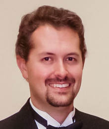

ROSIE WEISS is a violinist and Celtic fiddler from Billings, Montana. She’s been a member of the Billings Symphony since she was 12, and has performed as guest soloist with several symphonies in Montana and Michigan. As an avid chamber musician, she also performs with two string quartets, as well as Zestrio.
Rosie was a founding member of the National Youth Orchestra of the USA, and served for three seasons as assistant and associate concertmaster. She worked with conductors Valery Gergiev, Charles Dutoit, and Christoph Eschenbach, performing at Carnegie Hall, and touring internationally to Moscow, St. Petersburg, London (at the BBC proms), seven cities in China, Hong Kong, Amsterdam, Copenhagen, and Prague. As a member of the Youth Orchestra of the Americas, she’s performed in Chile, Argentina, and Brazil. She is currently pursuing a performance degree from University of Miami’s Frost School of Music.
DAVID KIRK is from Billings, Montana, and has been studying cello since the age of five. He has participated in master classes with Irene Sharp, Alysa Weilerstein, and Toby Saks. He has also received further coaching from Michael Reynolds, George Neikrug, Peter Zazofsky, and Angela Ahn.
David has been a member of the Billings Symphony since 8th grade, and has also performed with the All National Kennedy Center Honors Orchestra and Carnegie Hall Honors Orchestra. Recent honors include winning MSU-Bozeman’s Concerto Competition and performing with the MSU Symphony.
TIM SCHOESSLER, a pianist from Powell, Wyoming, holds both Bachelor’s and Master’s Degrees in Keyboard Performance from the University of Wyoming. He began studying piano at the age of seven and organ at the age of twelve. He started accompanying soloists and choirs, and participating in ensembles at the age of nine, and was active performing throughout his teens in Wyoming.
Tim has won MTNA competitions five times, and has also won the Northwest College Young Artist’s Competition and University of Wyoming Dorothy Jacoby Young Artist’s Competition. In 2002, he was a semi-finalist in the Fort Collins National Young Artist Competition.